Funerals
Traditional services in our chapel for over 125, with family hours, program design and printing, and limousine and transport.
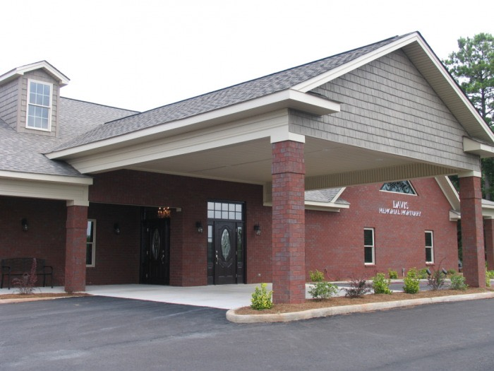
Valley, Alabama · Established February 2010
A funeral is the last thing you will ever do for your loved one, and the first step in healing. We are here for your family with personal care, sensitivity and respect for your wishes, faith and budget.
Available 24 hours a day. There is no need to wait for business hours.
Our story
Davis Memorial Mortuary, Inc. is owned by Tamicha A. Davis, a licensed embalmer and licensed funeral director who worked as a mortician and pre-need counselor at McKenzie’s Funeral Home in Tuskegee before founding her own funeral home. Establishing it was the fulfillment of a long-time pursuit.
It is the only African-American owned funeral home in Valley with a dedicated chapel for on-site funerals and family hours. Our modern facility was built to help families graciously receive their guests in rooms that are well lit and comfortable, with paintings and antique furnishings in the proper settings.
Davis Memorial Mortuary also celebrates the ethnic diversity of our community, offering a wide variety of options for the religious and cultural traditions of every family.
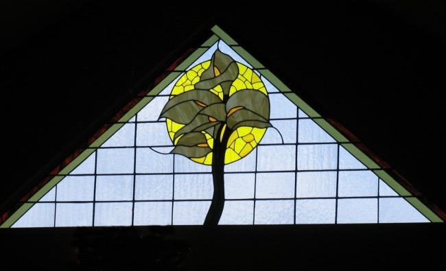
The tree-of-life window above our chapel.
Our facility
Our 7,000 square-foot building on W. F. Burns Drive has a chapel, parlors and visiting areas, a family lounge, a conference room for arrangements, and a covered portico for arrivals.
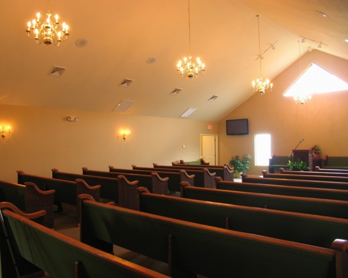
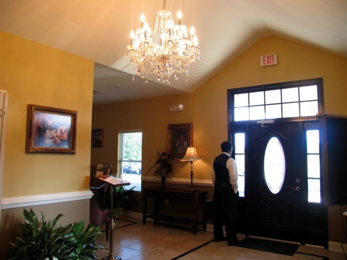
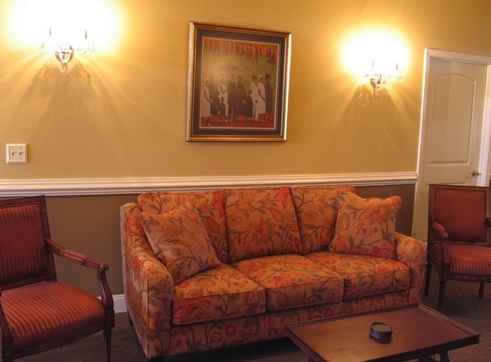
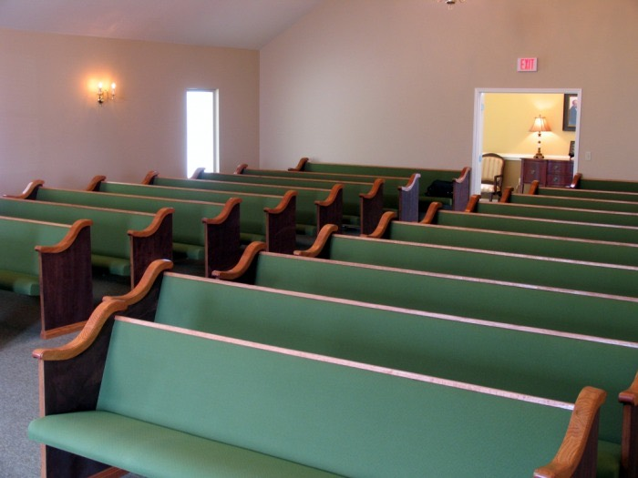
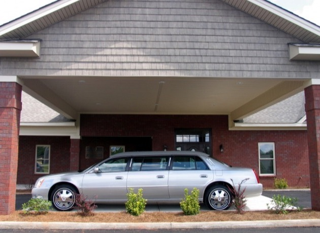
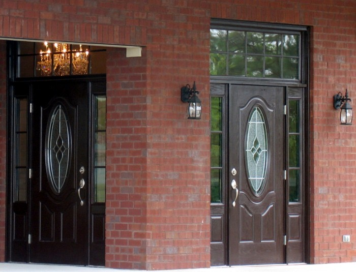
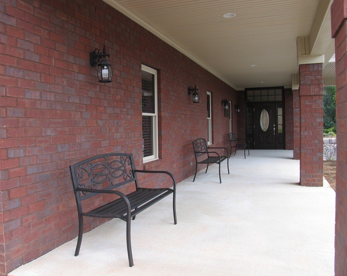
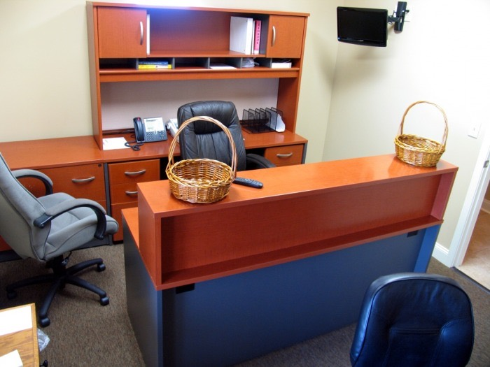
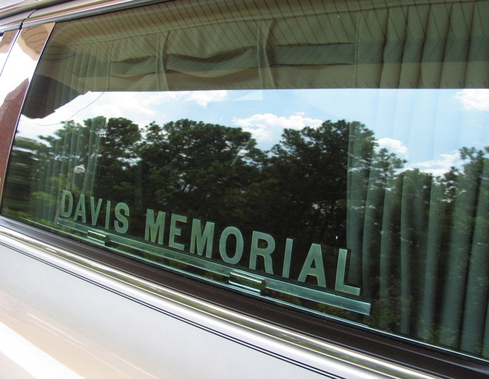
When you need answers
Learning a few simple facts can ease fears and clear up myths. For anything else, call us at any hour.
First, death must be officially pronounced by someone with the authority to do so. In a hospital, the doctor pronounces death. Under hospice care, the hospice nurse is usually authorized to do it. If death occurred at home without medical personnel, an official such as the sheriff or county coroner must be called. Once death is pronounced, call us and we will arrange the removal of your loved one.
We are available 24 hours a day, so there is no need to wait for regular business hours. We arrange the removal and set an appointment for your family to come in and make arrangements.
Family and close friends often take part, but the official responsibility falls on the person with the legal authority to sign the authorization for the funeral service, usually the next of kin. Signing it also means accepting financial responsibility for the funeral.
No. Embalming is not a legal requirement and is only performed with the family’s permission. The funeral director will usually ask during the first phone call with the next of kin.
Yes. Services can take place before or after cremation. You can choose a full service with viewing before cremation, or a memorial service with or without the cremated remains present. Simply tell your funeral director what you wish.
Social Security pays a one-time lump-sum death benefit of $255 to a surviving spouse or a dependent child if they qualify.
Contact
The preferred way to reach us is by telephone, so we can help you right away.